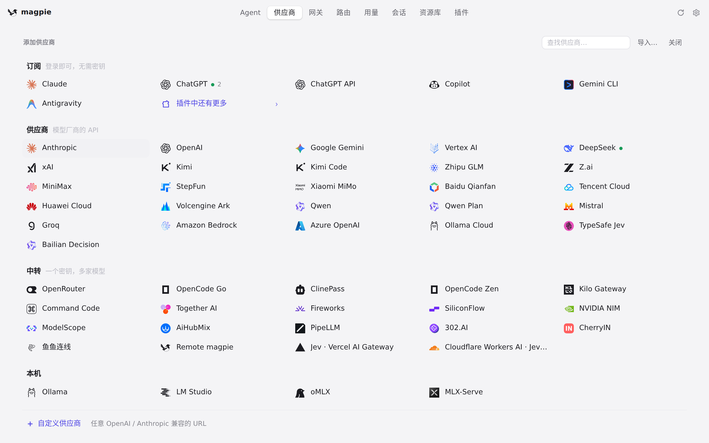
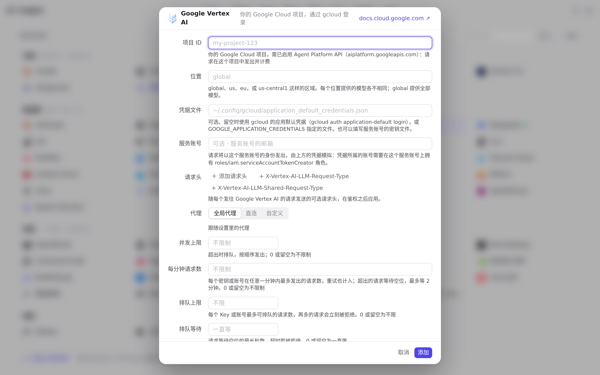
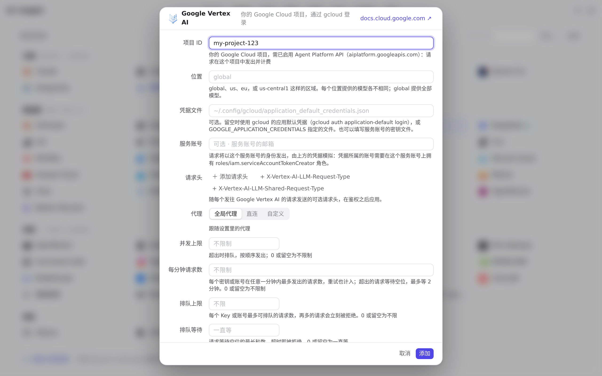
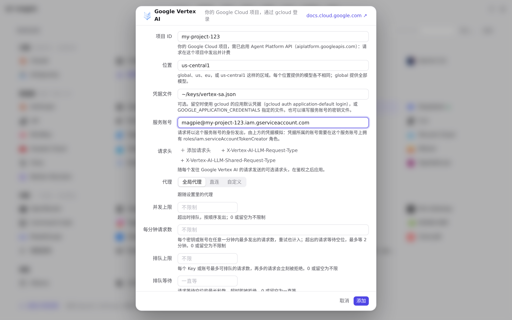
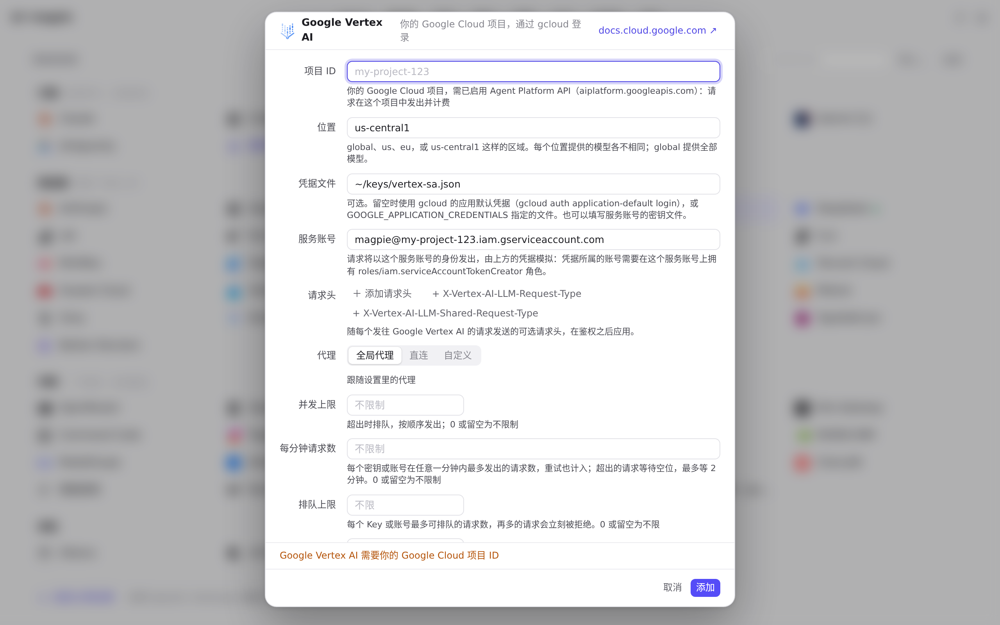
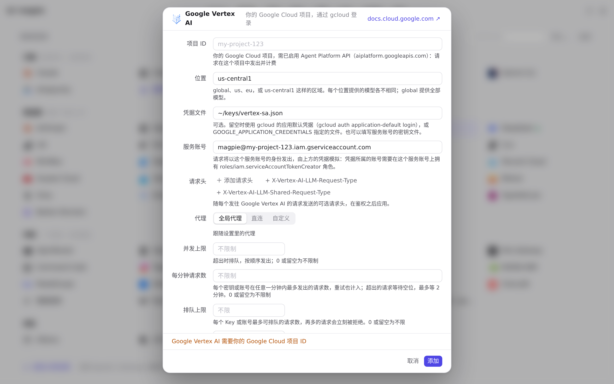

#1122 界面预览
commit 64f4255 · 回到 PR · 供应商页新增 Google Vertex AI 预设：添加/编辑它的编辑器不再要 API 密钥，而是「项目 ID / 位置 / 凭据文件 / 服务账号」，端点显示由项目和位置拼出的地址，供应商行的 pill 显示服务账号、凭据文件或 Google 默认凭据（未填项目时显示「需要项目」）；用量页请求列表也能把 Vertex AI 的 streamGenerateContent 标为 Gemini。
红线是鼠标走过的轨迹，红色圆环是一次点击；底部文字是这一步在做什么。空格暂停，← → 逐段查看。

添加 Google Vertex AI 供应商 · 添加面板里的预设列表，Google Vertex AI 与 Google Gemini 并列

添加 Google Vertex AI 供应商 · Vertex AI 编辑器的字段：没有 API 密钥，只有项目 ID、位置、凭据文件、服务账号

添加 Google Vertex AI 供应商 · 填了项目后出现的 Endpoints 一行，地址由项目与默认位置 global 拼出

添加 Google Vertex AI 供应商 · 位置改为 us-central1 后的地址与四个字段的内容

保存前的校验与用量页的 Gemini 标签 · 没有项目时保存被拒的提示与焦点落回「项目 ID」

保存前的校验与用量页的 Gemini 标签 · 请求列表里每条请求的协议标签